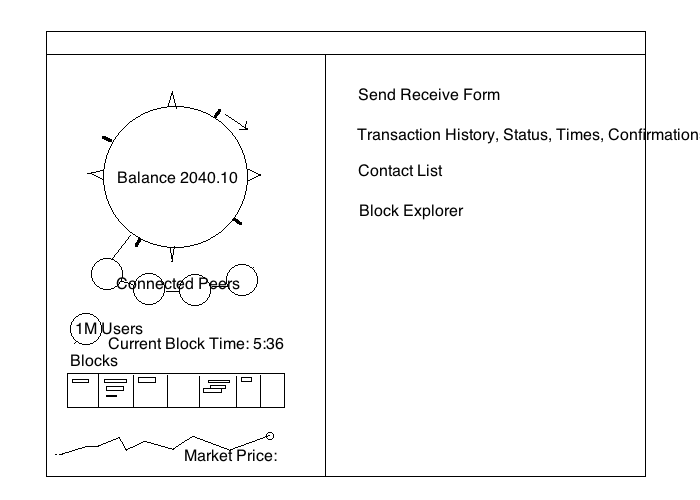

Bootstrap
New nodes connect to the public bootstrap peer and then discover other peers from the network.
http://safire.org:4888
Proof-of-concept network
A peer-to-peer digital currency experiment where known members create blocks by deterministic selection instead of mining.

New nodes connect to the public bootstrap peer and then discover other peers from the network.
http://safire.org:4888
The packaged client ships with a configured genesis block so test clients agree on the same chain.
safire.conf
This is active prototype software. Do not use it for real money or irreversible financial activity.
alpha test network
Safire is being tested for peer sync, fork recovery, block creator eligibility, membership records, wallet balances, and GUI usability.